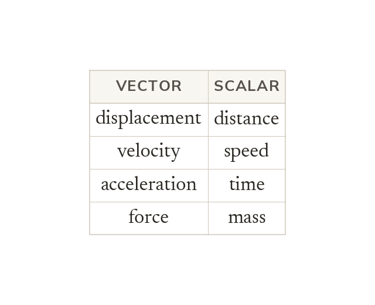
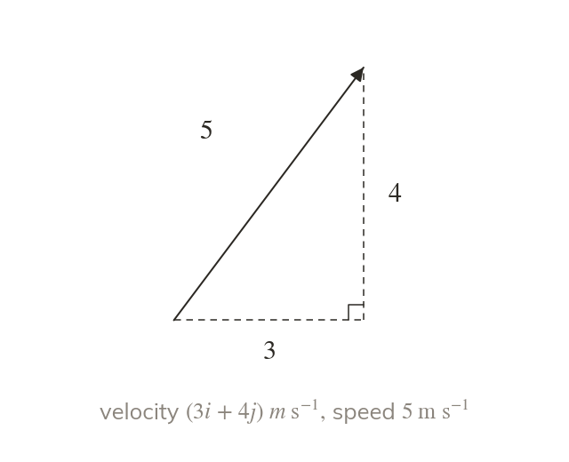
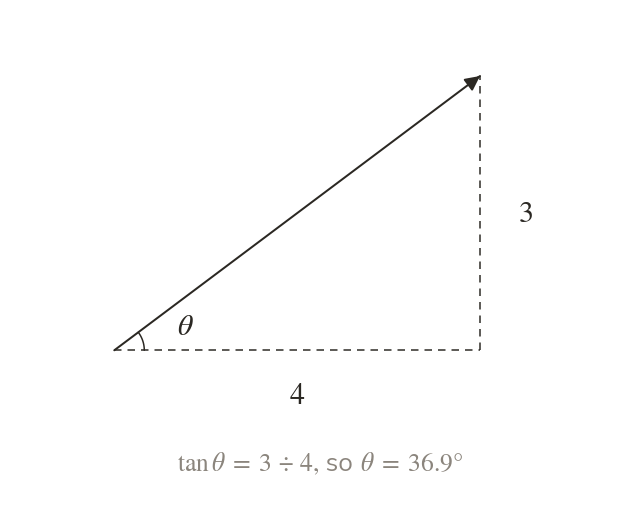
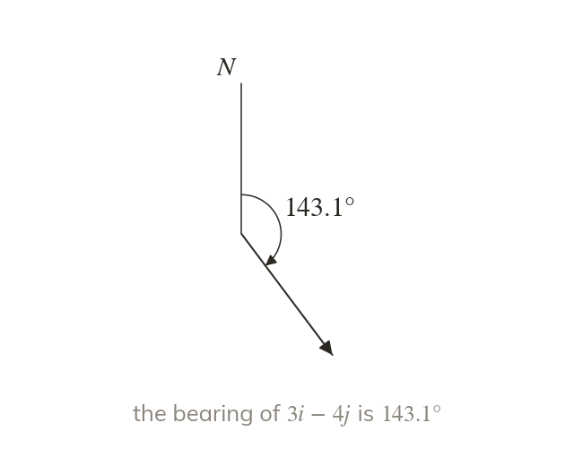
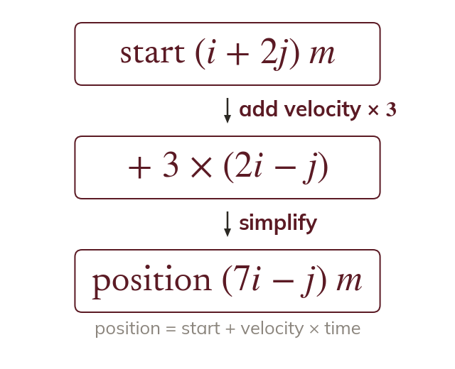

Vectors have a direction, scalars do not
A vector quantity has a size and a direction; a scalar has a size only. Each vector in mechanics has a scalar partner that is its size.
Velocity, displacement and force all have a direction as well as a size, so mechanics works with them as vectors. Finding a speed, a distance or a bearing from i, j form is a step in every later problem about motion and forces.
Work down the page at your own pace. Write every answer in your book first, then click to check it.
Read each card, then follow the worked examples one step at a time.

A vector quantity has a size and a direction; a scalar has a size only. Each vector in mechanics has a scalar partner that is its size.

The speed is the magnitude of the velocity vector. Distance is the magnitude of the displacement in the same way.
Pick an answer. If it's wrong, the feedback tells you which mistake it was.
Read each card, then follow the worked examples one step at a time.

The angle a vector makes with i comes from the tangent of its two components. Sketch the vector first, so you know which angle you have found.

A bearing is measured clockwise from north, and north is the j direction. Find the angle with j first, then turn it into the bearing.

At constant velocity, the displacement after seconds is the velocity × Add it to the starting position to find where the object is.
Pick an answer. If it's wrong, the feedback tells you which mistake it was.
Finished? Next lesson: M9.1 Displacement-Time Graphs.
For each skill, tap the one that is true for you today. Your Revise pages start with anything you mark Not yet.
Your ratings are saved on this device only.
Log in, then search for a code to practise that skill.